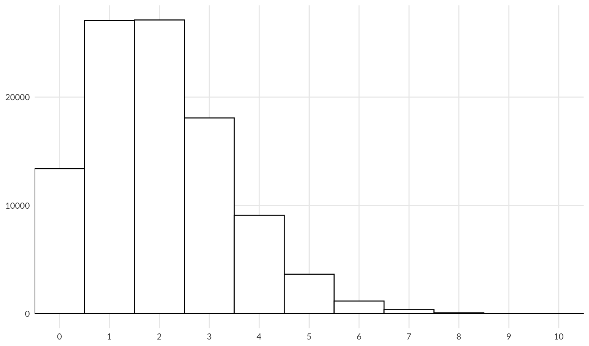
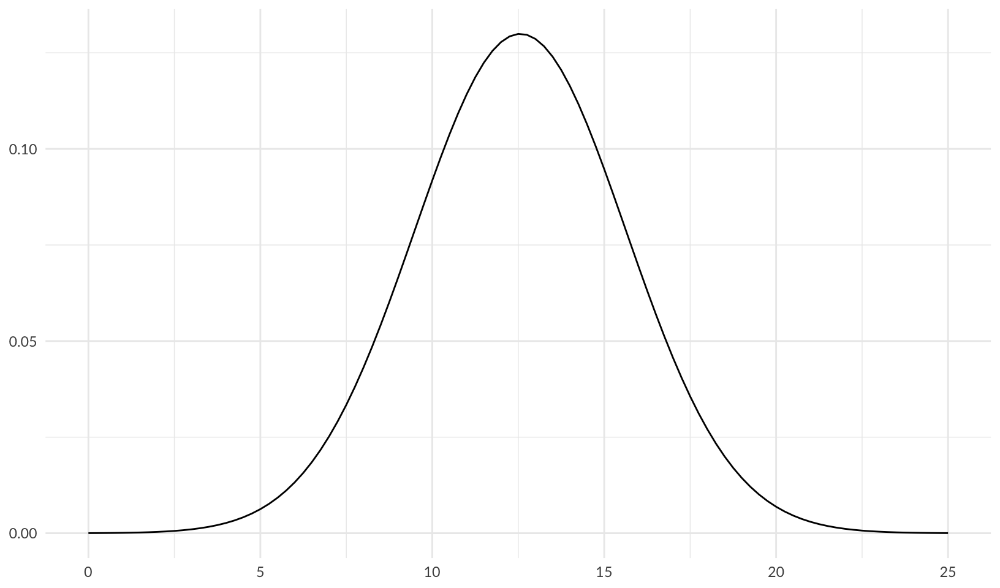
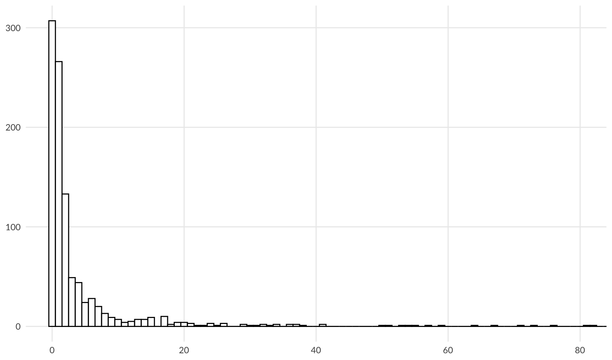

library(ggplot2)
library(jbplot)
library(readxl)
library(janitor)
library(dplyr)
library(formattable)Technology Risk Quantification
risk quantification
Prototype Risk Quantification tool for my SIRAcon 2024 talk, “UnFAIR: Simplifying and Expanding Technology Risk Quantification.”
Questions/TODO
Example Data
Generate realistic example data to populate the Excel spreadsheet. As discovered in practice, while the initial risks (“cybersecurity breach” and “technology outage”) are raised by the technology team, we find that the business risks (here represented by “loss of customer”) are significantly larger, caused by the functional obsolescence of the inventory system.
Frequency
Experts are asked to estimate the frequency of an adverse event, which is used as the average arrival rate for a Poisson distribution (\(\lambda\)).
From my breach rate analysis, the largest firms experience a cybersecurity breach about once every three years (\(\lambda\) = 0.347). A reasonably high breach rate for a system is between 0.2 and 0.33.
From my own experience, an unstable system might experience between 1-4 technology outages per year; a \(\lambda\) of 2 fits this nicely:
ggplot(data.frame(x = rpois(1e5, 2)), aes(x)) +
geom_hist_bw(binwidth = 1) +
scale_x_continuous(breaks = scales::breaks_width(1, offset = 1)) +
coord_cartesian(xlim = c(0, 10)) +
labs(x = NULL, y = NULL) +
theme_quo(minor = FALSE)
For the third risk, loss of customer, the firm has already experienced a loss, and expects this to increase. For loss of customer we also choose a \(\lambda\) of 2.
Impact
Drawing from the IRIS 2022 report, the loss magnitude of a cybersecurity breach follows a log-normal distribution with a mean (\(\mu\)) of 12.56 and a standard deviation (\(\sigma\)) of 3.07, which gives a log-transformed lognormal curve of:
ggplot(data.frame(x = c(0, 25)), aes(x)) +
stat_function(fun = dnorm, args = list(mean = 12.56, sd = 3.07)) +
labs(x = NULL, y = NULL) +
theme_quo()
Note: from Making sense of the rlnorm() function in R:
rlnorm(n = 1000000, meanlog = 7, sdlog = 75)andexp(rnorm(n = 1000000, mean = 7, sd = 75))produce the same result
An expert estimate matching this outcome for a breach would have low (5%), high (95%) and most likely values of:
qlnorm(c(0.05, 0.95, 0.5), meanlog = 12.56, sdlog = 3.07)[1] 1826.76 44442227.03 284930.34For a technology outage, a mean of 0.1 and a standard deviation of 1.7 are reasonable choices for parameters that fit the data for outage duration from the 2022 VOID Report:
ggplot(data.frame(x = rlnorm(1e3, meanlog = 0.1, sdlog = 1.7)), aes(x)) +
geom_hist_bw(binwidth = 1) +
coord_cartesian(xlim = c(0, 80)) +
labs(x = NULL, y = NULL) +
theme_quo(minor = FALSE)
This gives low (5%), high (95%) and most likely values of:
qlnorm(c(0.05, 0.95, 0.5), meanlog = 0.1, sdlog = 1.7)[1] 0.06745793 18.10614106 1.10517092This fits with my own experience; most outages last around an hour, and 95% of outages are resolved in 18 hours or less. From this, we can calculate a reasonable outage cost by multiplying by a per-hour rate. We assume that the main cost is caused by response and overtime paid out to catch up after the system is restored, $10K/hour.
qlnorm(c(0.05, 0.95, 0.5), meanlog = 0.1, sdlog = 1.7) * 10000[1] 674.5793 181061.4106 11051.7092For loss of customer, we estimate the low (5%) and high (95%) values at $100K and $20M respectively; these are reasonable choices given the size of the firm. We can test this by calculating the most likely value, after determining the mean and standard deviation using the approach from this StackExchange Post:
The mean is calculated using: \(\mu = \large \frac{\log(high) - \log(low)}{2}\)
meanlog_customer <- ((log(20000000) - log(100000)) / 2) + log(100000)
meanlog_customer[1] 14.16208The standard deviation is calculated using: \(\DeclareMathOperator{\qnorm}{qnorm} \large \sigma = \frac{\log(high) - \log(low)}{2 \times \qnorm(0.95)}\)
sdlog_customer <- (log(20000000) - log(100000)) / (2 * qnorm(0.95))
sdlog_customer[1] 1.610574From this we get a customer impact range of:
qlnorm(c(0.05, 0.95, 0.5), meanlog = meanlog_customer, sdlog = sdlog_customer)[1] 100000 20000000 1414214Import
Import data from Excel template, loading each tab into its own data frame. The data in prototype.xlsx is based on the examples provided above.
Risk descriptions:
risks <- read_xlsx("data/prototype.xlsx", sheet = "Risks") |>
clean_names()
risks |>
formattable(align = "l")| risk | description |
|---|---|
| Cybersecurity Breach | Risk of a cybersecurity breach of the inventory system. |
| Technology Outage | Risk of an inventory system outage. |
| Loss of Customer | Risk of losing and existing customer or failure to acquire a new customer due to functional limitations of the inventory system. |
Risk estimates:
estimates <- read_xlsx("data/prototype.xlsx", sheet = "Estimates") |>
clean_names() |>
rename(
lambda = frequency_per_yer, p05 = low_5_percent, p95 = high_95_percent, p50 = most_likely
)
estimates |>
mutate(across(p05:p50, ~ currency(.x, digits = 0L))) |>
formattable(align = "l")| risk | expert | lambda | p05 | p95 | p50 |
|---|---|---|---|---|---|
| Cybersecurity Breach | Technology Expert 1 | 0.25 | NA | NA | NA |
| Cybersecurity Breach | Technology Expert 2 | 0.33 | NA | NA | NA |
| Cybersecurity Breach | Technology Expert 3 | 0.20 | NA | NA | NA |
| Cybersecurity Breach | Business Expert 1 | NA | $2,000 | $45,000,000 | $300,000 |
| Cybersecurity Breach | Business Expert 2 | NA | $1,400 | $34,000,000 | $200,000 |
| Cybersecurity Breach | Business Expert 3 | NA | $2,100 | $54,000,000 | $500,000 |
| Cybersecurity Breach | Unicorn Expert | 0.25 | $1,900 | $44,000,000 | $275,000 |
| Technology Outage | Technology Expert 1 | 2.00 | NA | NA | NA |
| Technology Outage | Technology Expert 2 | 3.00 | NA | NA | NA |
| Technology Outage | Technology Expert 3 | 1.00 | NA | NA | NA |
| Technology Outage | Business Expert 1 | NA | $700 | $200,000 | $15,000 |
| Technology Outage | Business Expert 2 | NA | $500 | $150,000 | $10,000 |
| Technology Outage | Business Expert 3 | NA | $675 | $180,000 | $11,000 |
| Technology Outage | Unicorn Expert | 2.00 | $800 | $220,000 | $16,000 |
| Loss of Customer | Technology Expert 1 | NA | NA | NA | NA |
| Loss of Customer | Technology Expert 2 | NA | NA | NA | NA |
| Loss of Customer | Technology Expert 3 | NA | NA | NA | NA |
| Loss of Customer | Business Expert 1 | 2.00 | $100,000 | $20,000,000 | $1,500,000 |
| Loss of Customer | Business Expert 2 | 3.00 | $150,000 | $30,000,000 | $2,000,000 |
| Loss of Customer | Business Expert 3 | 1.00 | $75,000 | $15,000,000 | $1,200,000 |
| Loss of Customer | Unicorn Expert | 2.00 | $75,000 | $15,000,000 | $1,000,000 |
Consensus Estimate
Using a simple average of all experts that provided an estimate (not blank/NA), this gives us a consensus estimate for the three risks of:
consensus <- estimates |>
group_by(risk) |>
summarize(across(lambda:p50, ~ mean(.x, na.rm = TRUE)))
consensus |>
mutate(across(p05:p50, ~ currency(.x, digits = 0L))) |>
formattable(align = "l")| risk | lambda | p05 | p95 | p50 |
|---|---|---|---|---|
| Cybersecurity Breach | 0.2575 | $1,850 | $44,250,000 | $318,750 |
| Loss of Customer | 2.0000 | $100,000 | $20,000,000 | $1,425,000 |
| Technology Outage | 2.0000 | $669 | $187,500 | $13,000 |